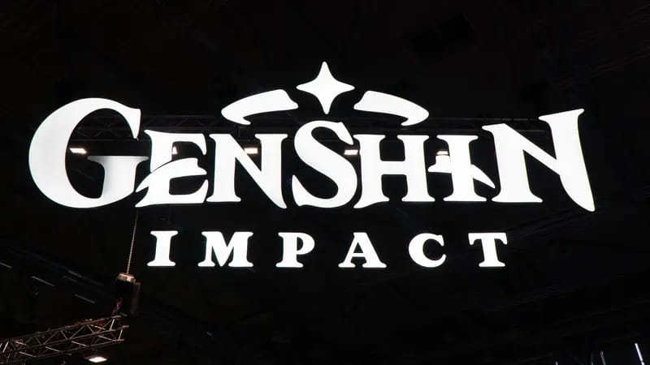

ROBLOX
Roblox adalah sebuah platform permainan daring dan sistem pembuatan permainan yang memungkinkan pengguna memprogram permainan dan memainkan permainan yang dibuat oleh pengguna lain.[7] Didirikan oleh David Baszucki dan almarhum Erik Cassel pada tahun 2004 dan secara resmi dirilis pada tahun 2006, platform ini menjadi tempat permainan yang dibuat pengguna dalam banyak genre, seperti permainan balap, permainan bermain-peran, simulasi dan kursus rintangan, diberi kode dalam bahasa pemrograman Lua.[8]
TENTANG GAME
game yang cocok di mainkan untuk survivors disaat berkumpul dengan teman
MINICRAFT 3D
Minecraft adalah sebuah permainan bak pasir yang dikembangkan oleh pengembang permainan Swedia Mojang Studios. Permainan ini dibuat oleh Markus "Notch" Persson dalam bahasa pemrograman Java. Setelah beberapa versi pengujian pribadi awal, permainan ini pertama kali diterbitkan pada Mei 2009 sebelum sepenuhnya dirilis pada November 2011, kemudian Jens "Jeb" Bergensten mengambil alih pengembangan. Permainan ini adalah salah satu yang terlaris sepanjang masa, terjual lebih dari 238 juta kali dan dengan lebih dari 140 juta pemain aktif bulanan.
TENTANG GAME
Di Minecraft, pemain menjelajahi dunia 3D kotak-kotak dengan bioma Minecraft beragam yang dihasilkan secara prosedural, dan dapat menemukan dan membuat dari bahan baku, alat kerajinan, membangun struktur atau pekerjaan tanah, tergantung pada mode permainan, dapat melawan musuh yang dikendalikan oleh komputer, dan juga bekerja sama atau bersaing dengan pemain lain di dunia yang sama. Mode permainan dalam Minecraft termasuk mode bertahan hidup, di mana pemain harus mendapatkan sumber daya untuk membangun dunia dan menjaga kesehatan, dan mode kreatif, di mana pemain memiliki sumber daya tanpa batas. Pemain dapat memodifikasi game dengan mod untuk membuat mekanisme, item, tekstur, add-ons, dan aset alur permainan baru.
NARUTO S7
point blnk adalah permainan komputer daring yang dikembangkan oleh zepetto untuk platfrom windows.
GAME SERU LAINYA
